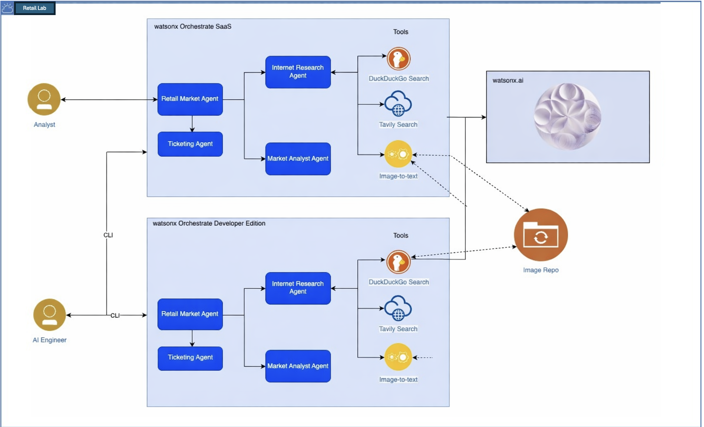

This use case is about an agent performing analysis of a product shelf, based on an image taken of that shelf. It will perform a search for market trends of the products, and make recommendations and create an action plan for potentially restructuring the shelf based on those trends.
The use case leverages watsonx Orchestrate agents and integrates with watsonx.ai to do image-to-text processing using a vision model.
In today’s fast-paced retail environment, brick-and-mortar stores face intense competition from online retailers. One key challenge is optimizing the display of products on store shelves to maximize sales and customer engagement. Traditional methods of analyzing customer behavior and market trends can be time-consuming and often rely on manual data collection and analysis. This can lead to missed opportunities and a failure to adapt to changing market conditions.
As a result, retailers struggle to create an effective in-store experience that resonates with their target audience. This can lead to decreased sales, reduced customer loyalty, and a loss of market share. There is a need for a more efficient and effective way to analyze customer behavior, identify market trends, and optimize product displays to drive business success.
The objective of this lab is to design and develop an intelligent system that can analyze images of store shelves, identify opportunities for improvement, and provide actionable recommendations for optimizing product displays. By leveraging AI agents, this system aims to automate the process of analyzing customer behavior and market trends, enabling retailers to make data-driven decisions and stay ahead of the competition.
The lab also helps in finding active recall notices on products and creating removal work orders for those products in a servicenow instance.
Through this lab, participants will learn how to create a solution that can analyze visual data, integrate with external data sources, use MCP servers and generate insights that drive business value. The goal is to create a system that can be easily integrated into existing retail operations, providing a competitive edge in the market.
The business value of this solution lies in its ability to drive sales growth, improve customer engagement, and increase operational efficiency. By optimizing product displays and acting quickly on recall issues, retailers can increase the chances of customers finding and purchasing the products they need without risks, leading to increased sales and revenue with reduced liabilities.
Additionally, this solution can help retailers to better understand their customers’ behavior and preferences, enabling them to make more informed decisions about product offerings, pricing, and promotions. By automating the process of analyzing customer behavior and market trends, retailers can also reduce the time and resources required to make these decisions, leading to increased operational efficiency and reduced costs.

You can find step-by-step instructions in this document. It shows how you can implement the use case using watsonx.ai and watsonx Orchestrate.